Auckland handyman, fences, gates, painting and repairs.
Fences, gates, carpentry, painting and insurance repairs, done properly and on time by Rizwaan at Handyman Group Auckland.
- Based in North Shore, Auckland
- Talk to Rizwaan direct
- Covers 30 minutes' drive
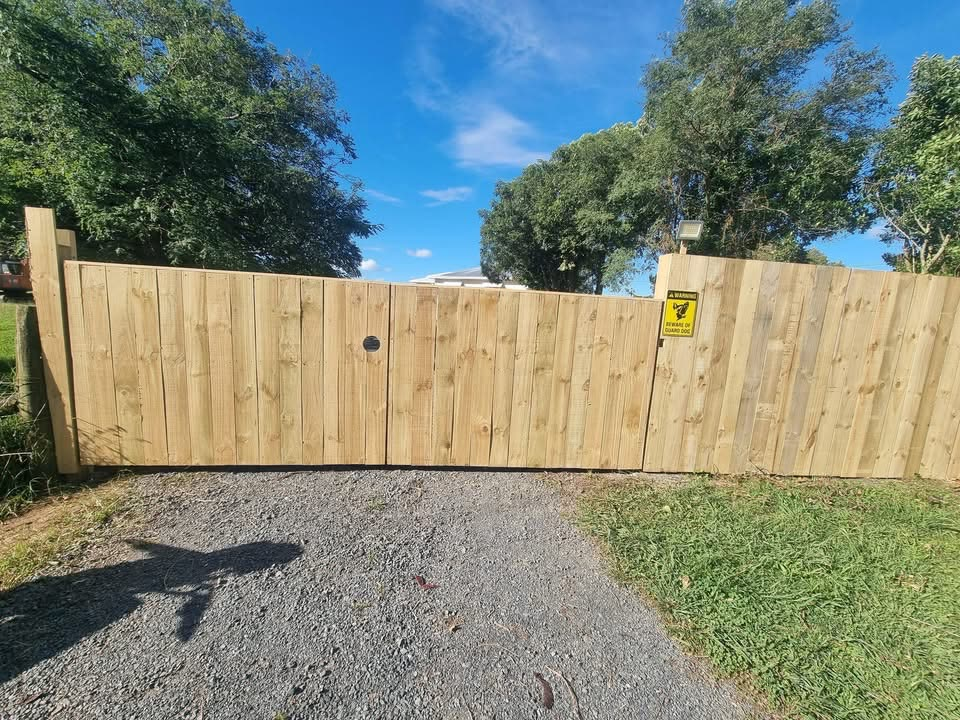
What Rizwaan does
Indoor and outdoor jobs around the home, big or small.
Fences
New fences built and old ones repaired.
Gates
Driveway and garden gates, built or fixed.
Decks
Deck repairs, new boards and stairs.
Carpentry
Building and timber work, inside and out.
Painting
Indoor and outdoor painting.
Insurance repairs
Repairs done to the insurance assessor's report.
Repairs and odd jobs
The fix-it list, sorted.
Insurance repair work
Rizwaan has done a lot of insurance repair work on Auckland homes, with reasonable quotes that follow the insurance assessor's assessment.
Ask about a repairWhat Auckland customers say
“Rizwan did an excellent job fixing my fence. He was professional, reliable, and completed everything on time. The quality of his work was outstanding, and I'm very grateful for the result.”
Nafiza Khan · 3 months ago“I'm happy with his service. From start to finish, he was professional, reliable, and easy to deal with. He completed the job on time fixing my gate, fence and painting, the workmanship was excellent.”
Irshaad Hussain · 3 months ago“Rizwan is a highly skilful contractor, highly recommend to do any carpenter, constructions, paint, outdoor or indoor jobs. I have experience with his work for many times and was highly satisfied with his jobs.”
Sawsan Rizakllah · 2 months ago“I'm very impressed with the quality of job he has done. Absolutely amazing work, we are so happy for the outstanding fence project done by Handyman Group-Auckland. Would highly recommend him for future projects.”
Rbr Nz · 3 months ago“I've known Rizwan for a long time. He's done a lot of insurance work for our homes before, always with reasonable quotes and following the insurance assessor's assessment.”
Anand Pal · 3 months agoRizwaan and Handyman Group
Handyman Group Auckland is Rizwaan Ali's business. He takes on fences, gates, carpentry, painting and insurance repairs for homes across Auckland.
Customers keep coming back: they say he is professional, reliable, finishes on time and is easy to deal with. When you call, you talk to Rizwaan direct.
I'll definitely be calling Rizwan again for any future repairs.Irshaad Hussain, Google review
Recent jobs
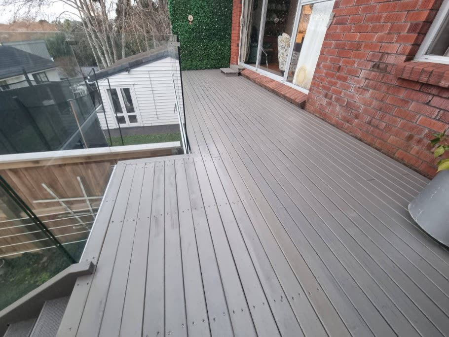
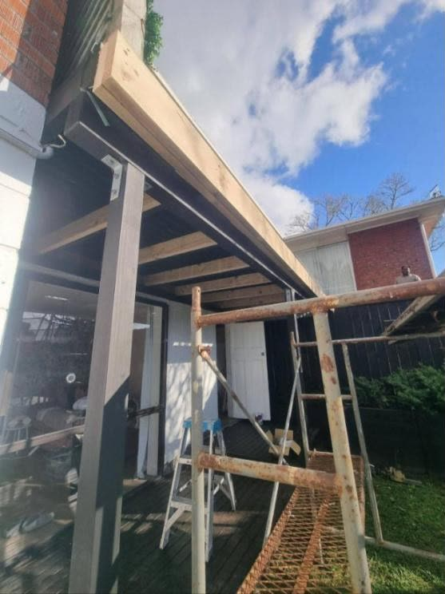
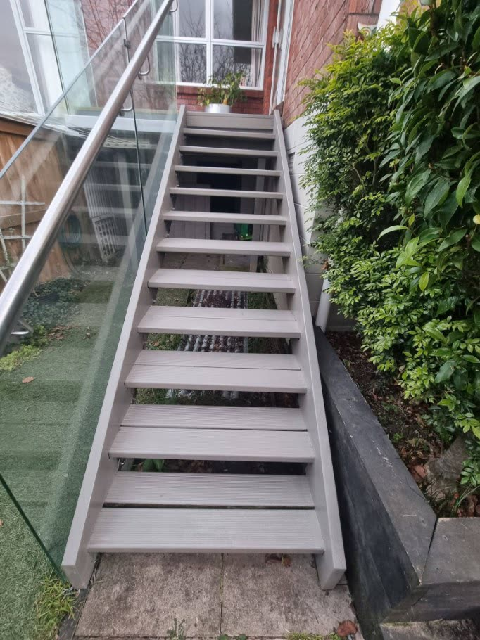
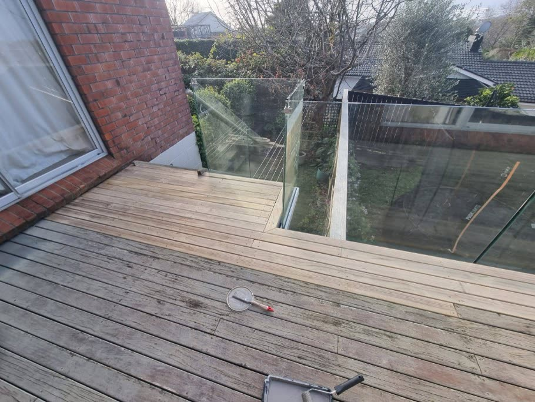
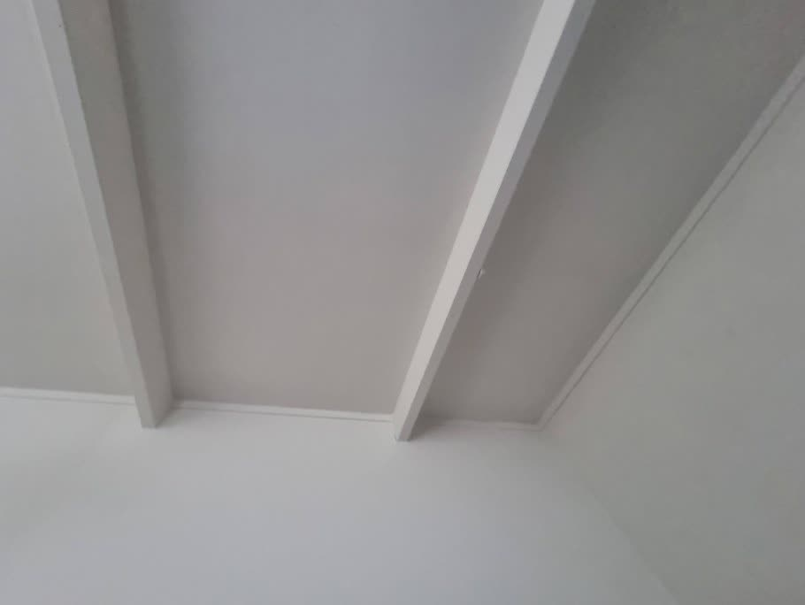
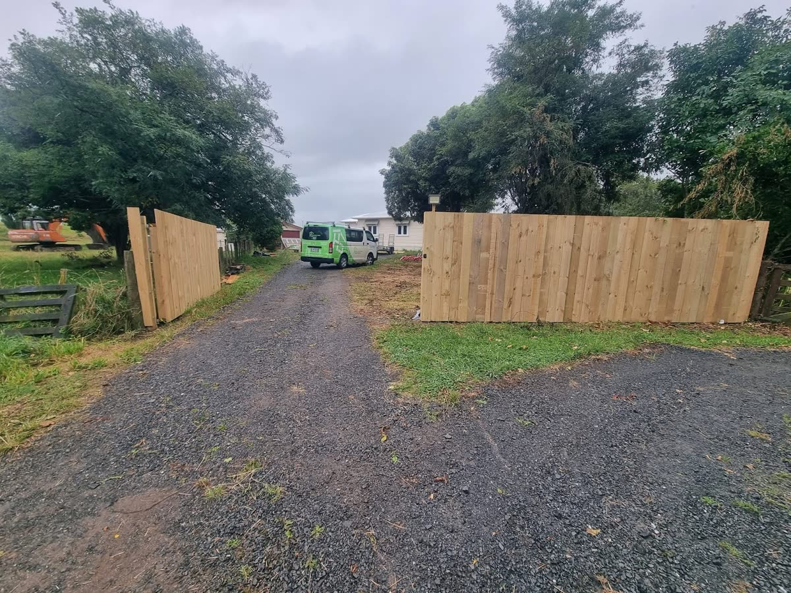
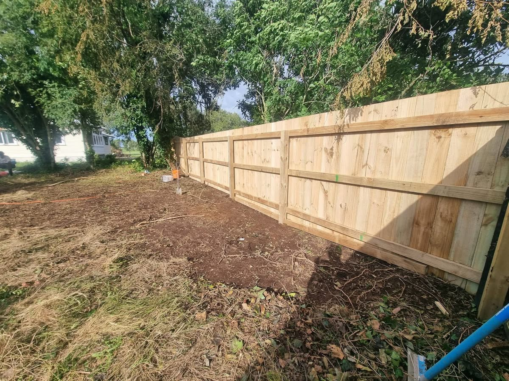
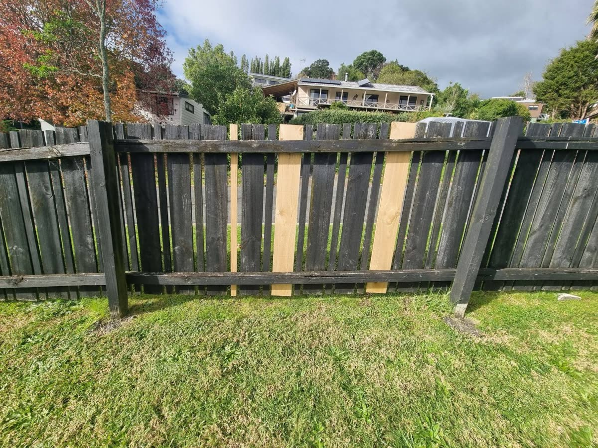
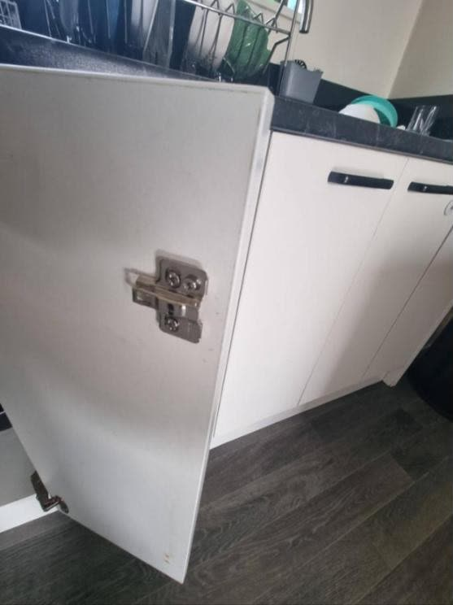
Rizwaan works on homes across Auckland. Tell him about the job and he'll get back to you with a quote.
How far are you?
Only used in your browser, never stored.
Ask Rizwaan for a quote
Opening hours
| Mon | 9am–5pm |
|---|---|
| Tue | 9am–5pm |
| Wed | 9am–5pm |
| Thu | 9am–5pm |
| Fri | 9am–5pm |
| Sat | Closed |
| Sun | Closed |
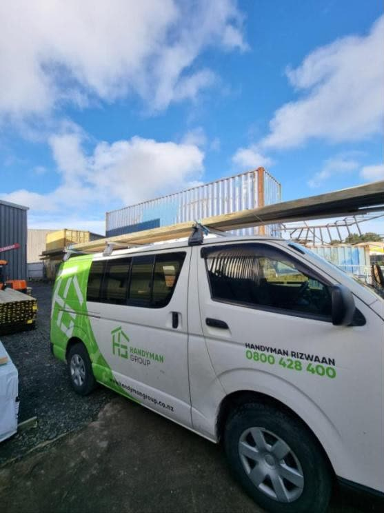